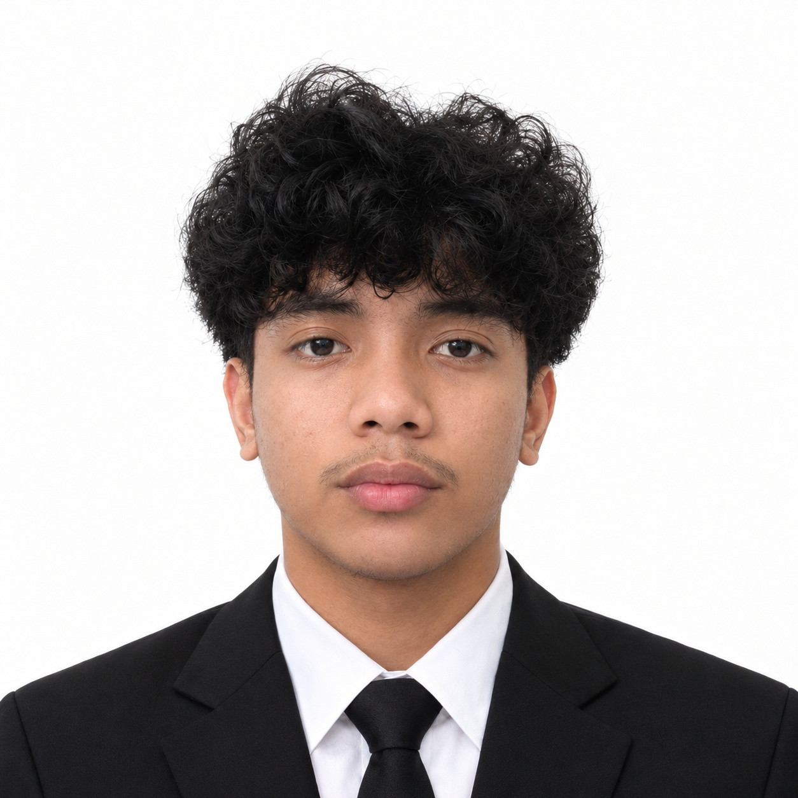
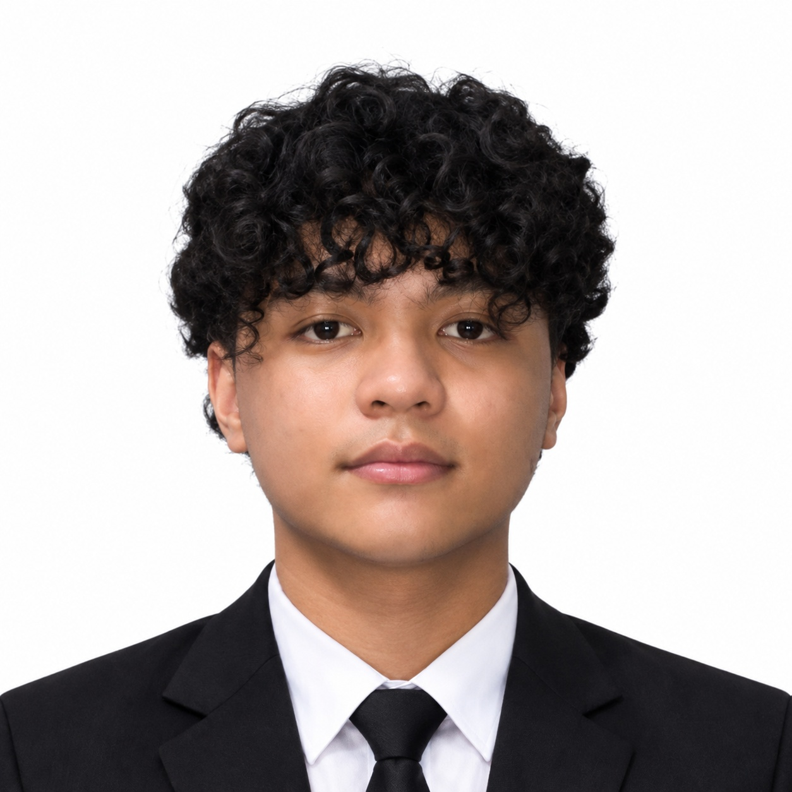
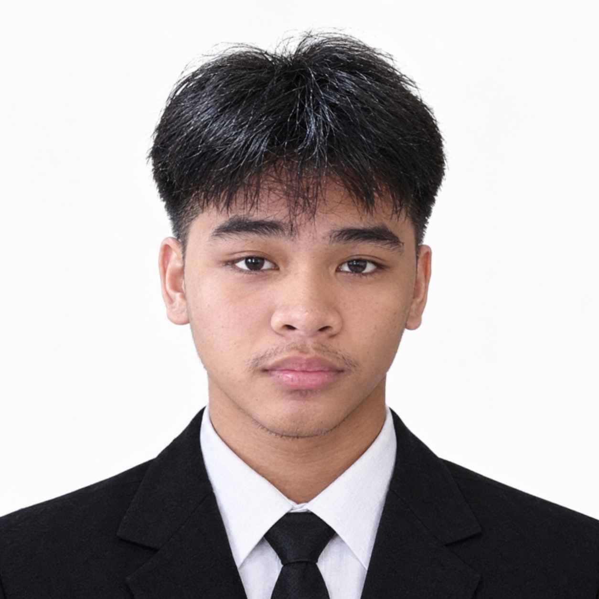
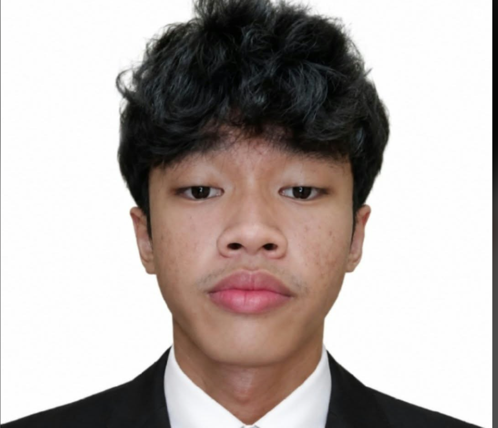

The people behind Lumen: designers, developers and problem-solvers who build every project together.

Bryce Allen L. Panganiban
Project Manager
I am Bryce Allen L. Panganiban, and I am the Project Manager. I keep our team organized, manage deadlines, and make sure every project runs smoothly. I enjoy working with my team and turning creative ideas into successful projects.
Jayson Zata
Creative Director
I am Jayson Zata, and I am the Creative Director. I help develop creative ideas and guide our team in creating attractive and meaningful designs. I enjoy exploring new concepts and bringing imagination to life.
Rodnie Guzman
Lead Graphic Designer
I am Rodnie Guzman, and I am the Lead Graphic Designer. I focus on creating quality designs and making sure our projects look professional and consistent. I enjoy experimenting with different styles and improving my design skills.

Harold Luke D. Casimiro
Brand Identity Designer
I am Harold Luke D. Casimiro, and I am the Brand Identity Designer. I create visual concepts that help brands stand out, including logos, colors, and other branding elements. I enjoy making designs that are unique and memorable.
Thirdy Noble
Social Media Designer
I am Thirdy Noble, and I am the Social Media Designer. I create engaging graphics for social media posts, banners, and online promotions. I enjoy making visuals that capture attention and communicate messages clearly.
Alessander Jherome Vicente Oliverio
Marketing Designer
I am Alessander Jherome Vicente Oliverio, and I am the Marketing Designer. I create promotional materials and advertising graphics that help businesses present their products and services. I enjoy combining creativity with effective visual communication.
Kyle Jian F. Taer
UI/UX Designer
I am Kyle Jian F. Taer, and I am the UI/UX Designer. I focus on designing user-friendly and visually appealing digital interfaces. I enjoy finding ways to make websites and applications easier and more enjoyable to use.
John Vincent Lopez
Photo Editor
I am John Vincent Lopez, and I am the Photo Editor. I enhance images, adjust colors, and improve photo quality to achieve a clean and professional look. I enjoy working with visuals and paying attention to the small details.
Elijah Cesar S. Calibod
Illustrator
I am Elijah Cesar S. Calibod, and I am the Illustrator. I create original illustrations and digital artwork that help communicate ideas creatively. I enjoy exploring different art styles and expressing ideas through visual storytelling.

Jonas Nasalita
Typography Designer
I am Jonas Nasalita, and I am the Typography Designer. I focus on choosing and arranging fonts to make designs clear, balanced, and visually appealing. I enjoy experimenting with text styles and creating layouts that are easy to read.

Naoji Wycoco
Presentation Designer
I am Naoji Wycoco, and I am the Presentation Designer. I create engaging presentations that effectively communicate ideas and messages. I enjoy designing slides that are visually appealing and easy to follow.